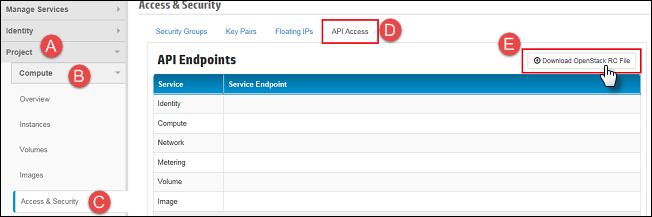

To configure the Database Service in a highly available manner, it is necessary to create
separate availability zones. Best practice is to create three availability zones.
Note: All
hosts should be associated with one of these availability zones, or the Database Service
will not be able to provision a database instance on that host. This may cause the
Database Service may run out of capacity even though there are unassociated hosts that
still have room.
The following steps show how to create three availability zones and assign a compute host to the zone.
- Download an RC file for the admin user and project.
- Log in to Horizon using the admin account.
- Download the OpenStack RC file.

- Use scp to copy the RC file over to the Deployer.
- SSH to the Deployer and source the RC file. You will need to provide the same admin
password that you used to log in to Horizon.
- Execute the following commands to create three availability zones named: "AZ-1", "AZ-2" and
"AZ-3".
openstack aggregate create --zone AZ-1 aggregate-AZ-1
openstack aggregate create --zone AZ-2 aggregate-AZ-2
openstack aggregate create --zone AZ-3 aggregate-AZ-3
- Validate that the availability zones were correctly created by issuing the following
command.
openstack aggregate list
- The following commands will add a host to your newly created aggregate. Execute this command
once for every host that you wish to associate with an
aggregate.
openstack aggregate add host <aggregate name or id> <host>
- The following command can be used to list all availability zones and the hosts associated with
each one.
openstack availability zone list